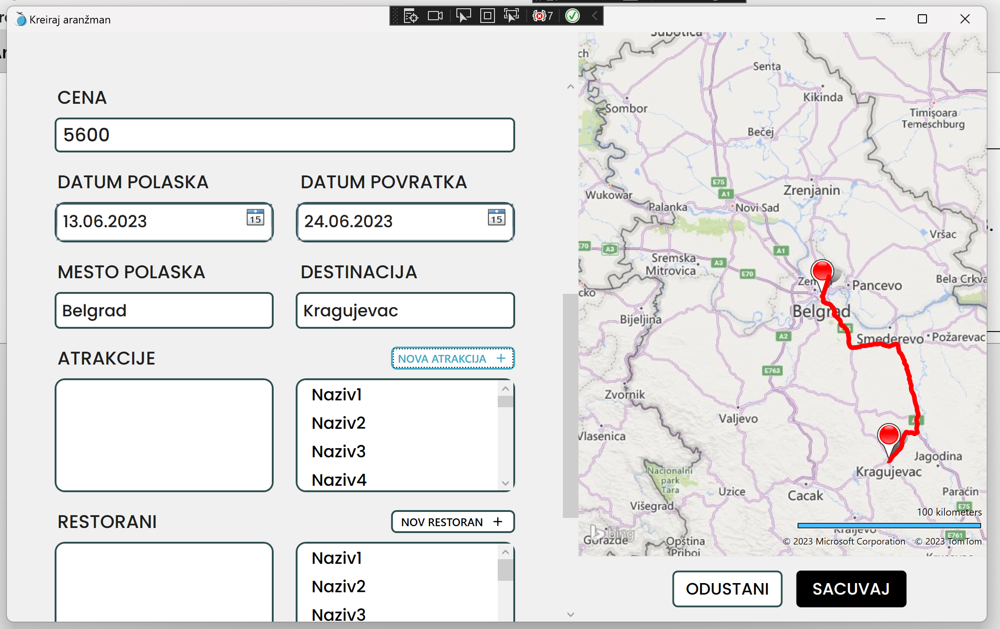

Kako ispuniti formu za kreiranje novog aranžmana?
Kada otvorite formu za novi aranžman primetićete da ima nekoliko polja od kojih se neka crvene. Potrebno je da sva crvena polja ispunite, kako biste mogli sačuvati novi arnžman.
Prvi podatak koji možete uneti, ali nije obavezno jeste slika. Nju možete da dodate u aranžman klikom na dugme "DODAJ SLIKU" što će otvoriti prozor pretraživača fajl sistema odakle možete da odaberete sliku sa Vašeg računara.
(Alternativno možete da isto to učinite pritiskom na kombinaciju tastera "CTRL+O" istovremeno na Vašoj tastaturi)
Alternativno, ako se nalazite u situaciji da tokom kreiranja novog aranžmana primetite da Vam atrakcija, retoran ili smeštaj koji želite da dodate još ne postoji u sistemu i želite nabrzaka da ga dodate, kliknite na dugme "NOVA ATRAKCIJA", koje se nalazi iznad liste svih atrakcija u Vašoj formi.

Klikom na bilo koje polje za unos, moćićete da počnete da unosite podatke.
(Za brži rad, možete se kretati kroz polja za unos klikom na "tab" dugme na Vašoj tastaturi)
Nakon što unesete željenu vrednost, prestaće polje da se crveni, što naznačava da je polje sada ispravno i možete da nastavite dalje sa unosom podataka.
Nakon što unesete podatke za adresu u odgovarajuće polje i kliknete van tog polja, ako je adresa dovoljno precizna, na mapi će Vam se iscrtati odgovarajući pin.
Unosom podataka za mesto polaska, iscrtaće Vam se pin na mapi. Isto to važi i za unos podataka za destinaciju. Nakon što ste uneli oba podatka, izračunaće Vam se ruta i iscrtaće se na mapi od polaska do destinacije.

Kod unosa datuma potrebno je da kliknete mišem na ikonicuu kalendara i izaberete željeni datum. Bitno je da početni datum mora biti u budućnosti i da krajnji datum mora biti posle početnog.
U delu biranja atrakcija, smeštaja i restorana za dodati u aranžman nalaze se sa desne strane spisci sa svim mogućim opcijama koje postoje u bazi. Da biste dodali nešto od navedenog potrebno je da kliknete i prevučete element iz desnog spiska u levi.

U slučaju da željenu atrakciju, restoran ili smeštaj ne možete pronaći u spisku svih, možete ih komotno dodati u sistem, bez da napuštate kreiranje aranžmana, tako što kliknete na dugme za kreiranje novog elementa iznad liste svih, npr "NOVA ATRAKCIJA".
Klikom na bilo koje od dugmeta za dodavanje novih elemenata, otvoriće Vam se odgovarajuća forma.
Nakon što ste uneli sve potrebne podatke, primetićete da Vam je dugme za čuvanje promenilo boju, naznačavajući da sada možete da sačuvate Vaš aranžman klikom na to dugme.
(Za brži rad, možete i jednostavno da pritisnete ENTER na Vašoj tastaturi)
Ako se ipak predomislite iz bilo kog razloga i ne želite da napravite novi aranžman, možete klikom na dugme ODUSTANI da prekinete. Otvoriće Vam se prozor za potvrdu akcije.
U slučaju da ste slučajno pošli da odustanete, možete prekinuti akciju.
(Za brži rad, možete i na tastaturu pritisnuti kombinaciju CTRL+X)